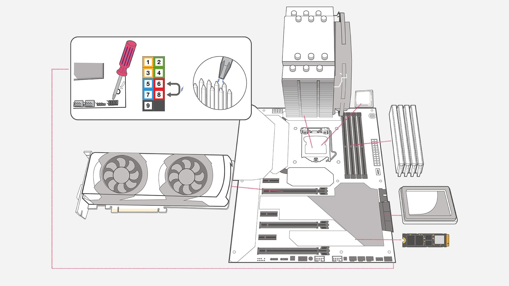

PC Requirements

(Note: These are the minimum system requirements to run microsoft flight simulator)
OS
Windows 10
Processor
Intel i5-4460|AMD Ryzen 3 1200
Memory
8 GB RAM
Graphics
NVIDIA GTX 770|AMD Ryzen RX 570
Storage
150 GB available space
Return Home